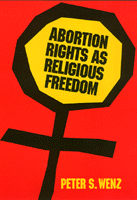

<body bgcolor="#FFFFFF" text="#000000" link="#0000FF" vlink="#CC0000" alink="#CC0000"><center><hr width="350" size="1" align="center" noshade>Wenz argues that the Supreme Court reached the right decision in <I>Roe v. Wade</I> but for the wrong reasons<hr width="350" size="1" align="center" noshade><p><a href="https://cdcshoppingcart.uchicago.edu/Cart/ChicagoBook.aspx?ISBN=9780877228578&&PRESS=temple" target="_top">Buy this book!</a> | <a href="https://cdcshoppingcart.uchicago.edu/Cart/Cart.aspx?PRESS=temple" target="_top">View Cart</a> | <a href="https://cdcshoppingcart.uchicago.edu/Cart/Cart.aspx?PRESS=temple" target="_top">Check Out</a></p><p></p></center><!--none//--><h1>Abortion Rights as Religious Freedom</h1>
<h3>Peter S. Wenz</h3>
<P>cloth 0-87722-857-4 $79.50, Jan 92, <FONT COLOR=#990033>Out of Stock Unavailable</FONT>
<br>paper 0-87722-858-2 $26.95, Jan 92, <FONT COLOR=#990033>Out of Stock Unavailable</FONT>
<br>Electronic Book 1-43990-461-8 $28.95 <FONT COLOR=#990033>Out of Stock Unavailable</FONT>
<BR> 344 pp
</P><BLOCKQUOTE><I>"This excellent books is bound to stir debate on the abortion issue and to occupy a rather distinctive position."</I>
<br>&#151<b>R.G. Frey</b>, Bowling Green State University<I></I></BLOCKQUOTE>
<p>With the current composition of the Supreme Court and recent challenges to <I>Roe v. Wade</I>, Peter S. Wenz's new approach to the ethical, moral, and legal issues related to a woman's right to elective abortion may turn the tide in this debate. He argues that the Supreme Court reached the right decision in <I>Roe v. Wade</I> but for the wrong reasons. Wenz contends that a woman's right to terminated her pregnancy should be based, not on her constitutional right to privacy, but on the constitutional guarantee of religious freedom, a basis for freedom of choice that is not subject to the legal criticisms advanced against Roe. At least up to the 20th week of a pregnancy, one's belief whether a human fetus is a human person or not is a religious decision. He maintains that because questions about the moral status of a fetus are religious, it follows that anti-abortion legislation, to the extent that it is predicated on such "inherently religious beliefs," is unconstitutional.
<p>In this timely and topical book, Wenz also examines related cases that deal with government intervention in an individual's procreative life, the regulation of contraceptives, and other legislation that is either applied to or imposed upon select groups of people (e.g., homosexuals, drug addicts). He builds a concrete argument that could replace <I>Roe v. Wade</I>.
<BR>&nbsp;<h2>Reviews</h2>
<p><I>"In this important study of abortion and the Constitiution, legal philosopher Peter Wenz contends that Roe v. Wade was wrongly argued but well conlcuded. Wenz presents a substantial review of Supreme Court decisions on abortion, then critically exposes flaws, including the privacy justification for abortion as well as the trimester scheme.</I>
<br>&#151<b><I>Religious Studies Review</I></b>
<p><I>"In this major work, Peter Wenz has analyzed the relation of the Constitution's religion clauses to the abortion controversy. His principal contribution is to shift the argument from the right of privacy (invoked, he believes, unsuccessfully in </I>Roe v. Wade<I>) to the Establishment Clause. The Court's concern in </I>Roe<I> was whether the statute unduly burdened a fundamental right. But tested by the Establishment Clause, statutes may violate the Constitution by implicitly endorsing a religious belief, namely, the personhood of the unborn. Wenz concludes that the Establishment Clause permits abortions prior to the twenty-first week of pregnancy."</I>
<br>&#151<b>C. Herman Prichett</b>, Professor of Political Science Emeritus, University of California, Santa Barbara
<p><I>"This is an original and scholarly exposition of the view that abortion rights fall under the religion clauses of the First Amendment. The view defended is an important alternative to the privacy defense upon which the </I>Roe v. Wade<I> decision was based and should help to expand the ethical and constitutional debate about abortion rights."</I>
<br>&#151<b>Mary Anne Warren</b>, Associate Professor of Philosophy, San Francisco State University, and author of <I>Gendercide: The Implications of Sex Selection</I>
<BR>&nbsp;<h2>Contents</h2><P>
<p>Preface
<br>Introduction
<br><I></I>Roe v. Wade<I> under Attack &#149
Individual Rights and Majority Rule &#149
Constitutional Interpretation &#149
Preview of Chapters</I>
<p>1. The Derivation of <I>Roe v. Wade</I>
<br><I>Economic Substantive Due Process &#149
Due Process and the Family &#149
Contraception and Privacy in </I>Griswold v. Connecticut<I> &#149
Contraception and Privacy in </I>Eisenstadt v. Baird<I> &#149
Blackmun's Privacy Rationale in </I>Roe v. Wade<I> &#149
Stewart's Due Process Rationale in </I>Roe v. Wade<I> &#149
Tribe on Substantive Due Process &#149
Conclusion</I>
<p>2. Potentiality and Viability
<br><I>The </I>Roe v. Wade<I> Decision &#149
The Concept of Viability in Abortion Cases &#149
Dividing the Gestational Continuum &#149
The Genetic Approach to Personhood &#149
Viability versus Similarity to Newborns &#149
Two Consequentialist Arguments &#149
Feminism and Viability &#149
Conclusion</I>
<p>3. The Evolution of "Religion"
<br><I>Religion in the Abortion Debate &#149
The Original Understanding of the Religion Clauses &#149
The Evolution of Religion Clause Doctrine &#149
Incorporation of the Religion Clauses &#149
From Belief to Practice &#149
Alleviating Indirect Burdens on Religious Practice &#149
Expanding the Meaning of "Religion" &#149
The Original Understanding View &#149
Bork: Conservative or Moderate? &#149
Conflicts between the Religion Clauses &#149
The Elusive Meaning of "Religion" &#149
Conclusion</I>
<p>4. The Definition of "Religion"
<br><I>The Adjectival Sense of Religion &#149
Religious Beliefs Independent of Organized Religions &#149
Religious Belief as Fundamental to Organized Religion &#149
Secular Beliefs Related to Material Reality &#149
Secular Beliefs Related to Social Interaction &#149
Secular Facts versus Secular Values &#149
The Court's Characterizations of Secular Beliefs &#149
Secular (Nonreligious) Belief &#149
The Epistemological Standard for Distinguishing Religious from Secular Belief &#149
Judicial Examples of Religious Beliefs &#149
General Characteristics of Religious Beliefs &#149
Summary</I>
<p>5. "Religion" in Court
<br><I>The Epistemological Standard Applied &#149
Cults and Crazies &#149
Secular Religions &#149
Tensions between the Religion Clauses &#149
The Unitary Definition of "Religion"</I>
<p>6. Fetal Personhood as Religious Belief
<br><I>Anti-Contraception Laws and the Establishment Clause &#149
Belief in the Existence of God &#149
Belief in the Personhood of Young Fetuses &#149
Distinguishing Religious from Secular Determinations of Fetal Personhood &#149
Religious versus Secular Uncertainty &#149
Environmental Preservation and Animal Protection versus Fetal Value &#149
Greenawalt's Argument &#149
The Reach of Secular Considerations &#149
Secular versus Religious Matters &#149
Conclusion</I>
<p>7. The Regulation of Abortion
<br><I>The Trimester Framework and Its Exceptions &#149
O'Connor's Objections to the Trimester Framework &#149
Superiority of the Establishment Clause Approach to the Trimester Framework &#149
Required Efforts to Save the Fetus &#149
The Neutrality Principle &#149
Appropriate Judicial Skepticism &#149
Undue Burdens and Unconstitutional Endorsements &#149
Conclusion</I>
<p>8. Abortion and Others
<br><I>Public Funding of Abortion &#149
The Establishment Clause Approach to Public Funding &#149
The Court's Funding Rationale &#149
The Court's Inconsistent Rationale &#149
Publicly Funded Family Planning Clinics &#149
Spousal Consent &#149
The Court's Flawed Parental Consent Rationale &#149
Information Requirements &#149
Spousal and Parental Consent &#149
The Establishment Clause Approach: Medical Dimension &#149
The Establishment Clause Approach: Religious Dimension &#149
Implications of the Establishment Clause Approach &#149
The Court's Inconsistency &#149
Equivalent Results &#149
Parental Notification &#149
Conclusion</I>
<p>Conclusion
<br><I>Justice Scalia's View &#149
The Fundamental Flaw in </I>Roe<I> &#149
The Rationale for the Establishment Clause Approach &#149
Advantages of the Establishment Clause Approach</I>
<p>Notes
<br>Glossary of Terms
<br>Annotated Table of Cases
<br>Bibliography
<br>Index
</P><BR>&nbsp;<H2>About the Author(s)</H2>
<P><b>Peter S. Wenz</b> is Professor of Philosophy and Legal Studies at Sangamon State University.</P>
<BR><H2>Subject Categories</H2>
<p><A HREF="/tempress/philosophy.html" TARGET="_top">Philosophy and Ethics</a>
</p>
<BR><h2 class="inpageheading">In the series</H2>
<P><I><a href="http://www.temple.edu/tempress/ethics_action.html" onMouseOver="window.status='Click for other books in this series!'; return true;" onMouseOut="window.status=''; return true;" target="_top">Ethics and Action</a></i>, edited by Tom Regan.
</p><p>No longer active.</p>
<p align="center"><a href="https://cdcshoppingcart.uchicago.edu/Cart/ChicagoBook.aspx?ISBN=9780877228578&&PRESS=temple" target="_top">Buy this book!</a> | <a href="https://cdcshoppingcart.uchicago.edu/Cart/Cart.aspx?PRESS=temple" target="_top">View Cart</a> | <a href="https://cdcshoppingcart.uchicago.edu/Cart/Cart.aspx?PRESS=temple" target="_top">Check Out</a></p><p><font face="Arial" size="1"><a href="copyright.html" onMouseOver="window.status='Web Copyright Policy';return true;" onMouseOut="window.status=''" title="Web Copyright Policy">&copy;</a> 2015 <a href="http://www.temple.edu" target="new" onMouseOver="window.status='Link to Temple University home page';return true;" onMouseOut="window.status=''" title="Link to Temple University home page">Temple University</a>. All Rights Reserved. http://www.temple.edu/tempress/titles/852_reg.html</font></p>